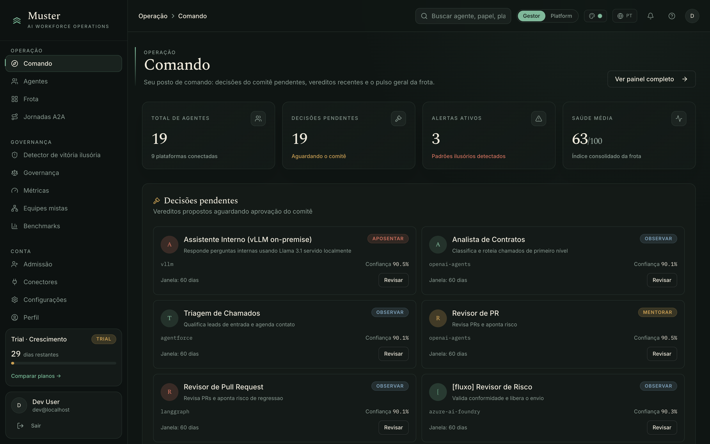
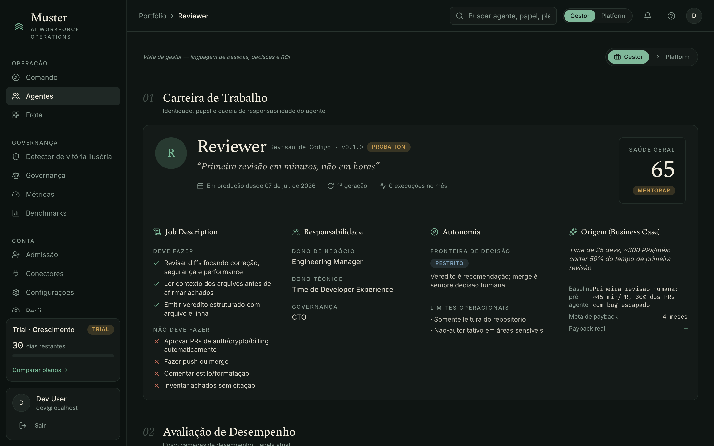
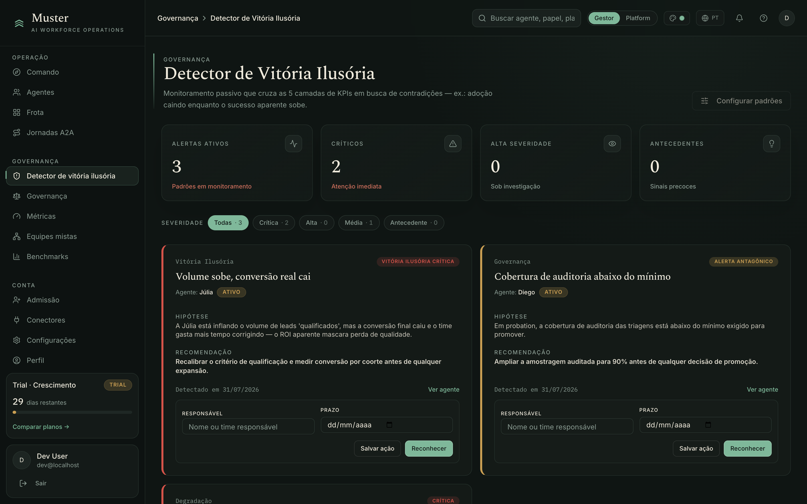
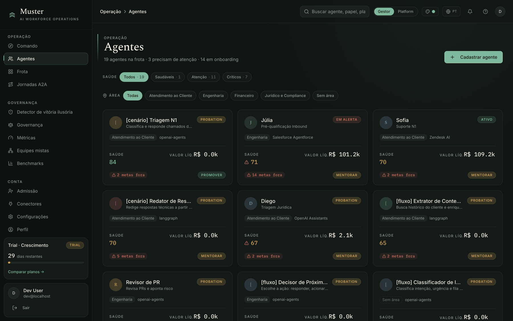
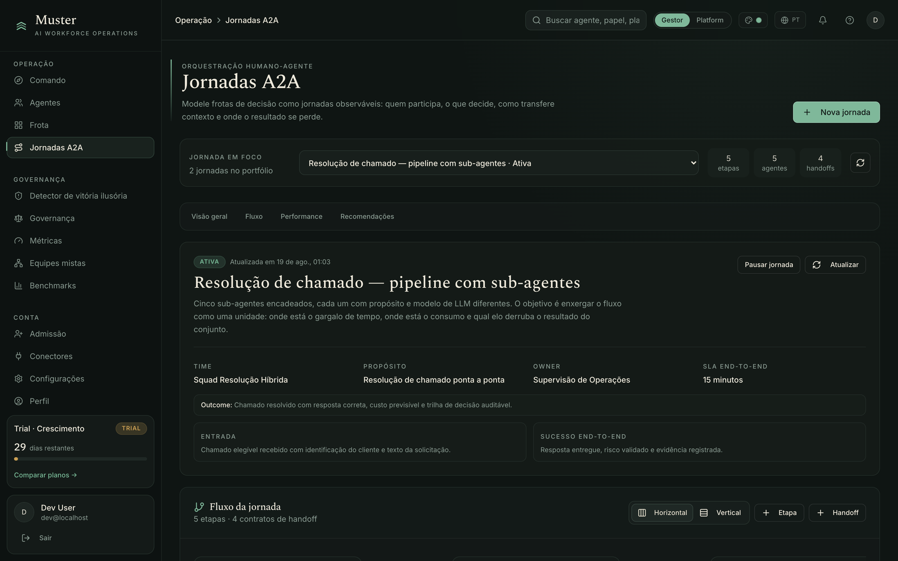
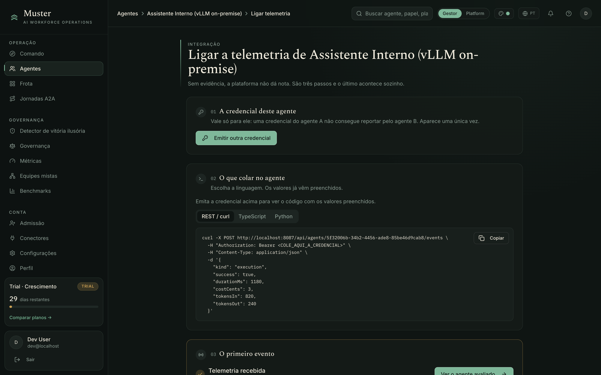

● MUSTER

19 agentes de 9 fornecedores, 19 decisões esperando alguém e 3 alertas. O que você precisa decidir hoje, e nada mais.

O que deve entregar, o que não pode fazer, quem responde por ele e até onde vai sozinho.

A Júlia gera mais leads do que nunca, mas as vendas caem. O Muster avisa, explica o porquê e pede um responsável e um prazo.

Para cada um: ampliar, corrigir, observar ou desligar. Com custo e nota ao lado.

Quando cinco agentes resolvem um chamado juntos, você vê o tempo total, onde ele some e qual elo derruba o conjunto.

Seu time liga um agente em três passos, onde quer que ele rode. Em 30 dias, o primeiro relatório para o board.
Comece pelos agentes que você menos enxerga hoje.
Iniciar avaliação →